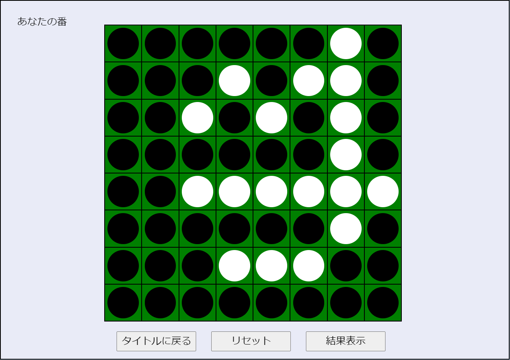
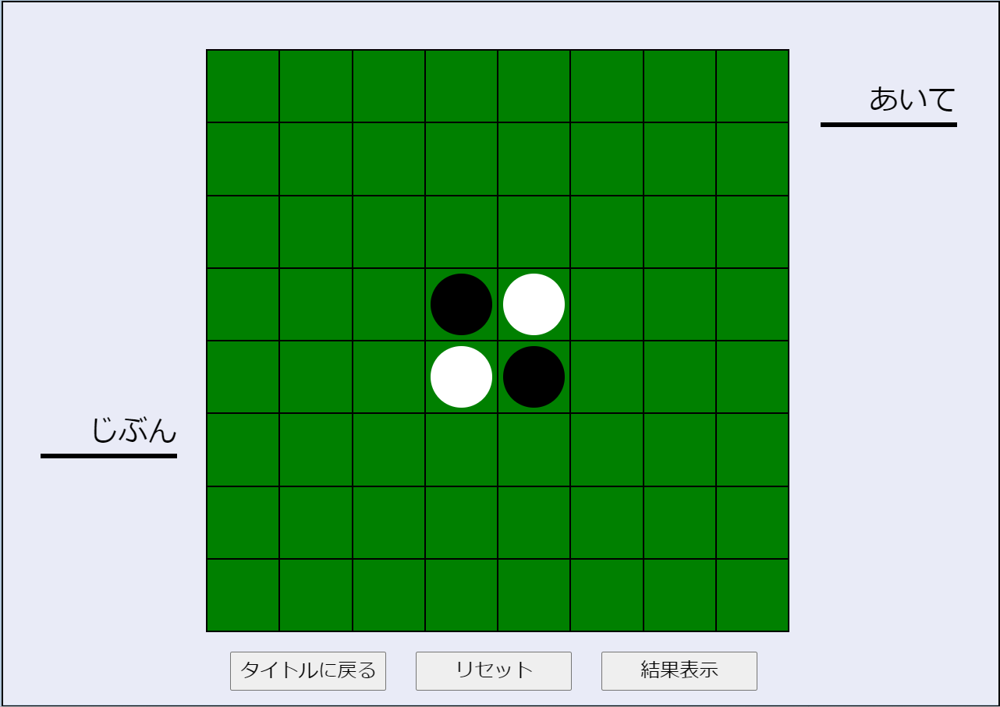

ToYoGameSpot
トップページ
ゲーム紹介
メンバー紹介
ゲーム
紹介
しょうかい
オセロゲーム


＜
＞
ゲームの
内容
ないよう
交互
こうご
に
石
いし
をおいて、
相手
あいて
の
石
いし
を
挟
はさ
む、シンプルなゲーム。
最後
さいご
に
自分
じぶん
の
色
いろ
の
石
いし
が
多
おお
かったら
勝
か
ちだよ。
４つの
角
かど
は
相手
あいて
に
取
と
られないから、
強
つよ
いかも？ よ～く
考
かんが
えて、
石
いし
を
一気
いっき
にひっくりかえそう！
プレイ時間目安:10分
🎮ゲームをプレイ！🎮
オセロゲーム
＜
＞
ゲームのキャッチコピー
ゲームの紹介文。このゲームはこういうゲームです。こんなことができるよ。
プレイ時間目安:300分
むずかしさ ★★★☆☆
🎮ゲームをプレイ！🎮
新しいゲームも
製作中
せいさくちゅう
！